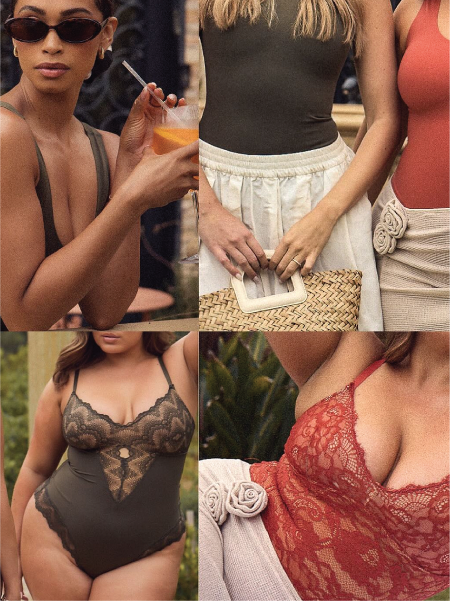

We work with brand founders at two critical moments: when they're building their first product, and when they're ready to grow beyond it.
Miss Galit works exclusively in intimates, activewear, and swimwear. Not because we can't do other categories — because these are the ones we know at the level that actually matters. The construction specifics. The factory relationships. The sourcing conversations that require someone who speaks the language. That's where we live, and it's where we do our best work.
We serve two types of founders — and while their needs look different on the surface, they share something important: they're serious, they're resourceful, and they want a partner who will be just as invested in their outcome as they are.
You're a founder building your first intimates or activewear product. You know what you want to create — you just don't know yet what it takes to get it into production at a quality and price point that works. Maybe you've been burned by a manufacturer before. Maybe you've been shopping around and getting nowhere. Maybe you don't even know what questions to ask.
That's exactly where we come in. We speak your language. We translate the industry to you, and we translate your vision to the industry — and we don't let you make the expensive mistakes before you have to.
"We speak your language — we get it, even if you are missing a few words here and there."
You've launched. You have a product that's working — customers love it, repeat orders are coming in, and you're ready to grow. But what got you here won't get you there. You need someone who understands what scaling actually looks like: expanded size ranges, new colorways, category extensions, and production partnerships that can handle more volume without losing quality.
We've done this before. We know what breaks at scale and how to build the infrastructure before it breaks. We know which factories can grow with you and which can't. And we stay in it with you — not just for the launch, but for what comes after.
"My customers want a loyal consulting team. Stable. Someone they will say: we know what's good and we stay with good."
The founders we work with best are the ones who've already tried to go it alone and realized they need someone who's been here before. They're decisive. They have taste. They're willing to hear the hard truth. And they want to build a working relationship — not just get a deliverable.
If you're looking for the cheapest option, we're probably not the right fit. If you're looking for the right option — one that protects your brand and your investment and gets you to market with something you're proud of — let's talk.

Galit's talent and passion are unmatched by anyone else in the industry. Her creative sense made Delta succeed where other companies failed. She brings out the best in her coworkers and associates. She is a terrific partner in working and servicing customers.
Janet Seltzer
FounderWhether you have a napkin sketch or a SKU that's already selling, the best place to start is a conversation.
Set Up a Call